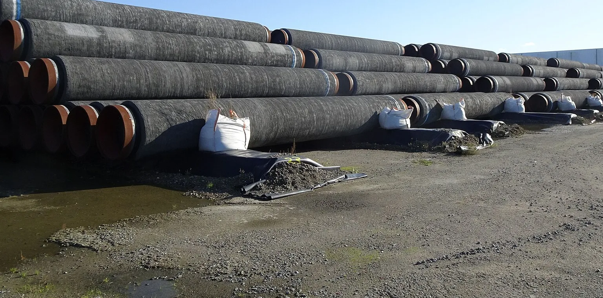
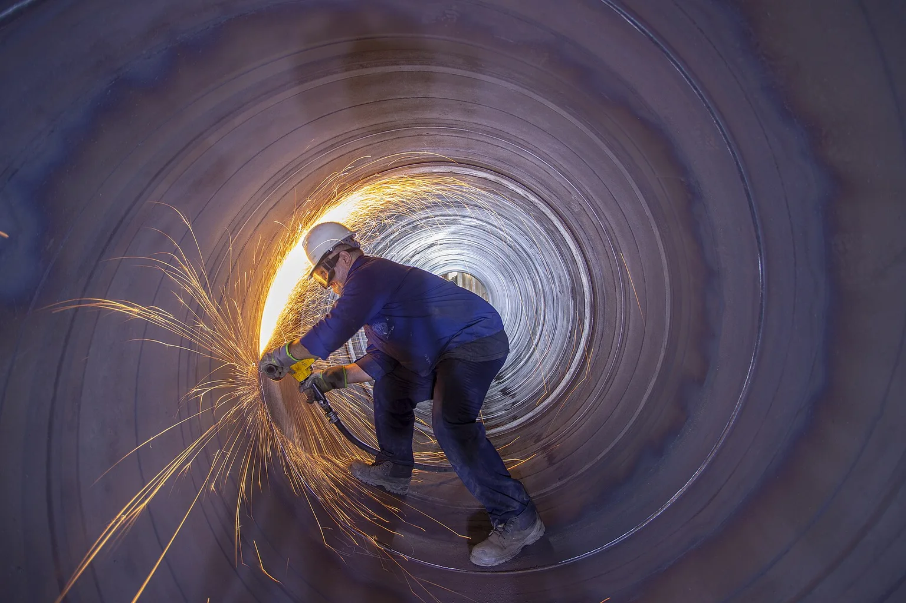
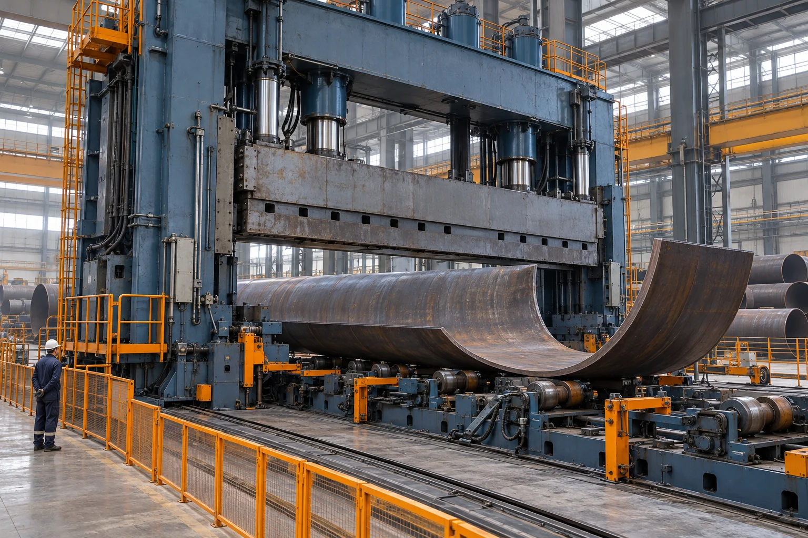
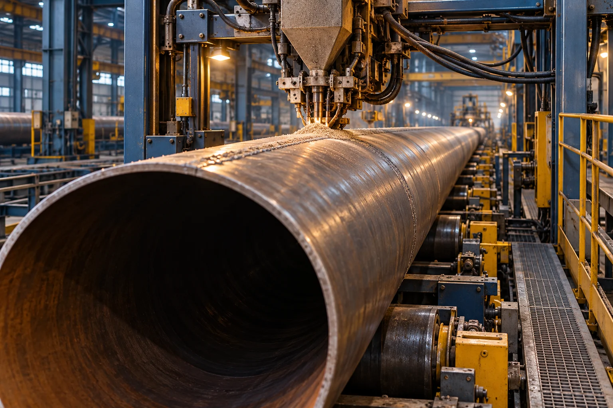
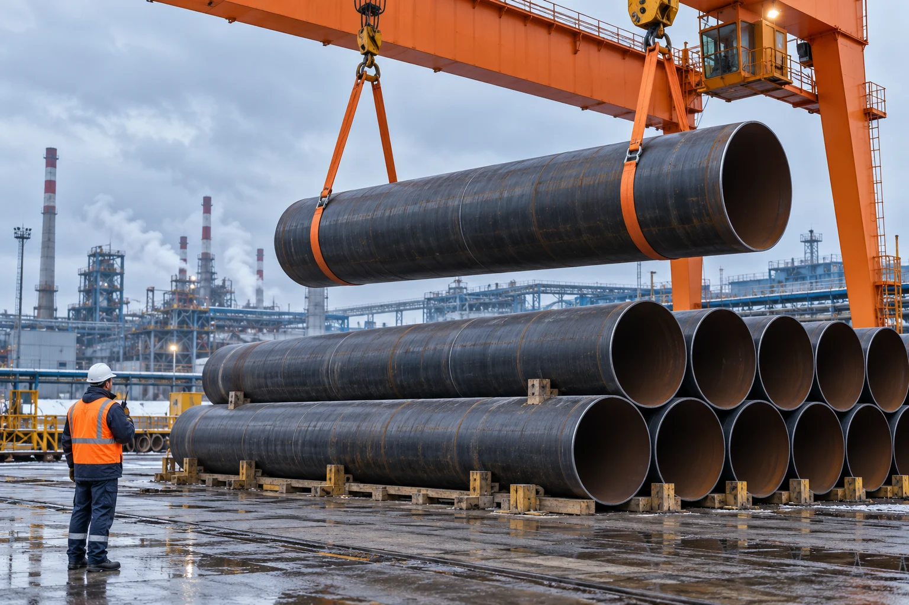
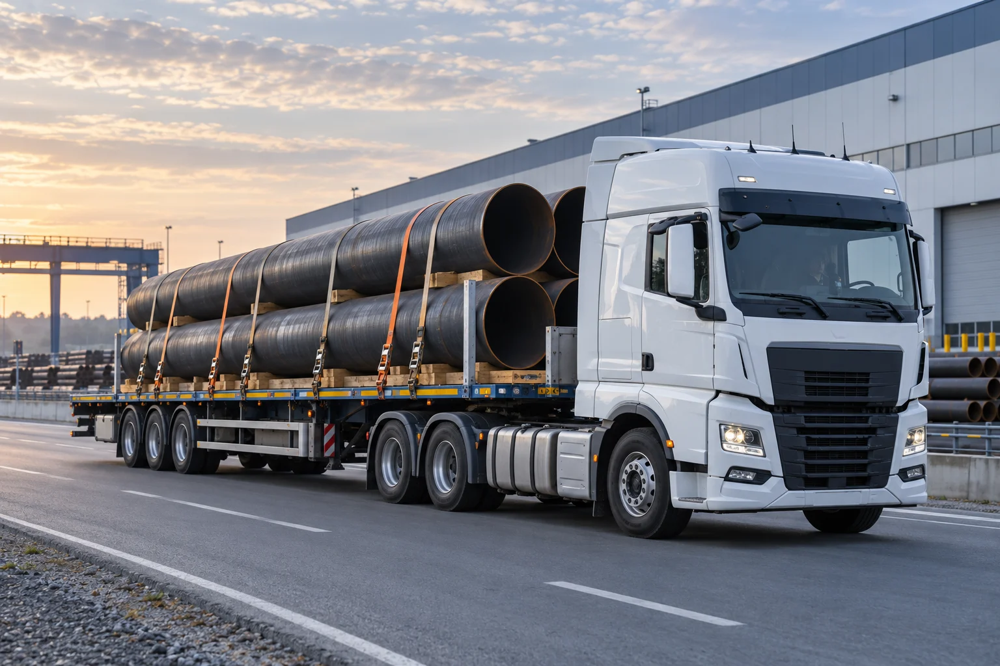

Подготовка металла
Входной контроль листа, проверка документов на металл, подготовка кромок.
Производство стальных труб для магистральных и распределительных газопроводов. От исходного металла до поставки на объект.
Познакомиться с производством ↗
АО «ТрубГазПром» специализируется на выпуске стальных сварных труб для газотранспортной инфраструктуры и промышленных трубопроводных систем.
Объединяем подготовку металла, формовку, сварку и контроль в единую производственную цепочку. Параметры партии согласовываем с проектной и закупочной службами заказчика.
Исполнение, марка стали и объём партии
определяются техническим заданием.
Прямошовные сварные трубы для линейной части газопроводов и технологических участков газотранспортной системы.
Последовательный технологический процесс.
Контроль на межоперационных переходах.


Лист последовательно получает профиль будущей трубы на специализированном прессе.

Сварочная головка проходит вдоль стыка кромок. Зона сварки защищена слоем флюса.
Входной контроль листа, проверка документов на металл, подготовка кромок.
Формирование профиля трубы и выполнение продольного сварного соединения.
Проверка геометрии, сварного шва и герметичности по программе контроля.
Отделка торцов, маркировка и комплектация сопроводительной документации.
Качество формируется в процессе производства. Результаты контроля связываются с номером партии и сохраняются в сопроводительных документах.
Программа контроля качества ↓ TXTПроверка соответствия исходного металла заказу, состояния поверхности, размеров и документов поставщика.
Контроль сварных соединений предусмотренными технологией методами. Объём и критерии приёмки устанавливаются для конкретного заказа.
Проверка диаметра, толщины стенки, овальности, прямолинейности и торцов. Параметры испытаний определяются согласованной документацией.
Идентификация партии, сведения о металле, результаты приёмки и отгрузочная спецификация сопровождают продукцию.
График отгрузок увязываем с этапами строительства.
Комплектацию — с потребностью площадки.

Подготовка грузовых мест, подбор захватов, защита торцов и проверка крепления груза.

Автомобильные партии, согласование маршрута и сопровождение отгрузочной документацией.
Укажите назначение труб, размеры и объём.
Сформируйте запрос для закупочной процедуры.
Промышленный комплекс «Северный»
ул. Трубопрокатная, 18, корпус 1
г. Северопромышленск, Россия